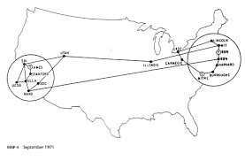
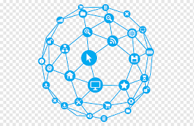

Origen y Definición de Red
Las redes informáticas nacen de la necesidad de compartir información y recursos entre sistemas. Han transformado radicalmente la comunicación mundial.
Origen de la Red
Las redes tienen su origen en los años 60 con ARPANET (Advanced Research Projects Agency Network), proyecto financiado por el Departamento de Defensa de EE.UU. en 1969. Su objetivo era mantener comunicaciones descentralizadas que sobrevivieran fallos en nodos individuales. Con el tiempo evolucionó hacia la Internet global que conocemos hoy.

Definición de Red
Una red informática es un conjunto de dispositivos (computadoras, servidores, impresoras, teléfonos) interconectados mediante medios físicos o inalámbricos, con el fin de compartir datos, recursos y servicios. La comunicación sigue reglas llamadas protocolos (como TCP/IP).

Comunicación de Datos
La comunicación en red implica la transmisión de datos entre un emisor y un receptor a través de un medio físico o inalámbrico, siguiendo reglas o protocolos estandarizados que garantizan que la información llegue íntegra y en orden correcto.